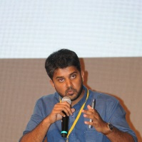

Siddharth Menon
Siddharth Menon is an independent travelling architect, moving between his building projects in the Indian states of Himachal Pradesh, Uttar Pradesh, Telangana and Karnataka. His work aims to provide contextual and contemporary design solutions to the challenge of building with locally sourced materials like mud, bamboo, stone and wood, community oriented building techniques and indigenous craftsmen in a swiftly globalizing and homogenizing rural India. The use of architecture as a tool to address the ecological, economic, socio-cultural and political aspects of working in the global south forms an important aspect of his work. Siddharth graduated from Mumbai University, India with a Bachelor’s degree in Architecture in 2011. He has worked as an architect at the Auroville Earth Insitute and with Didi Contractor in Himachal Pradesh. When not on his building sites, he writes, lectures and teaches graduate students of architecture in Mumbai where he currently resides.
